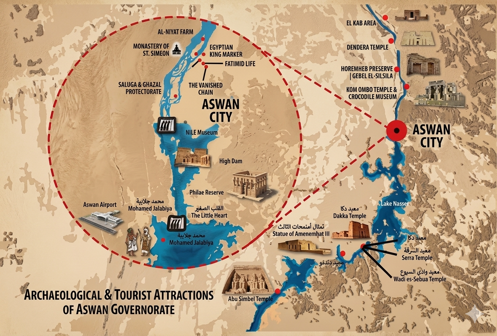
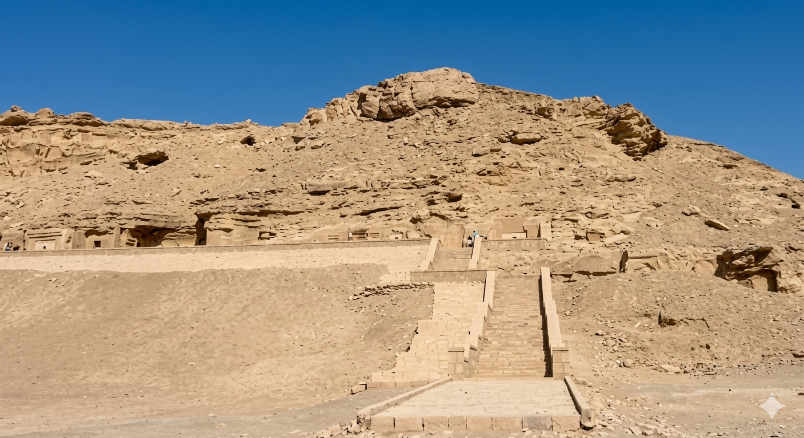
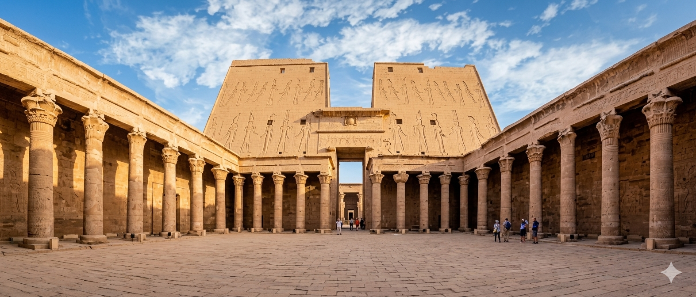
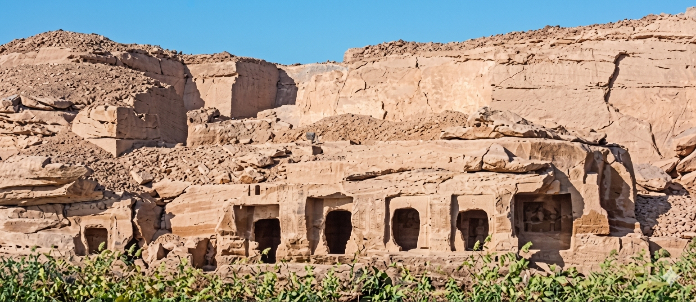
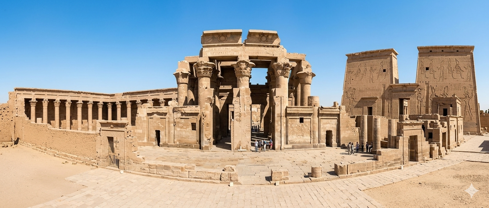
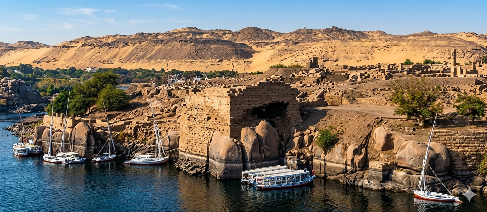
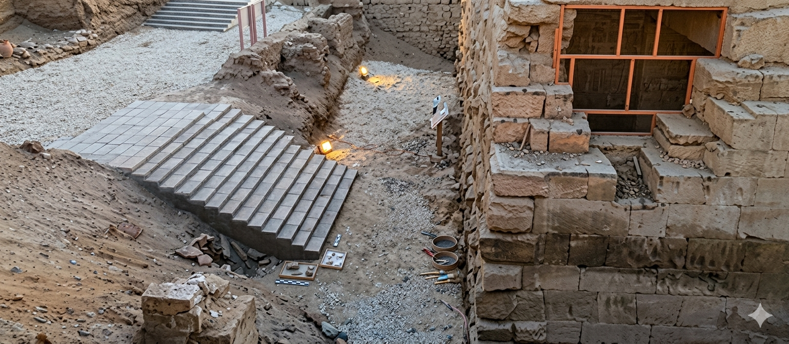
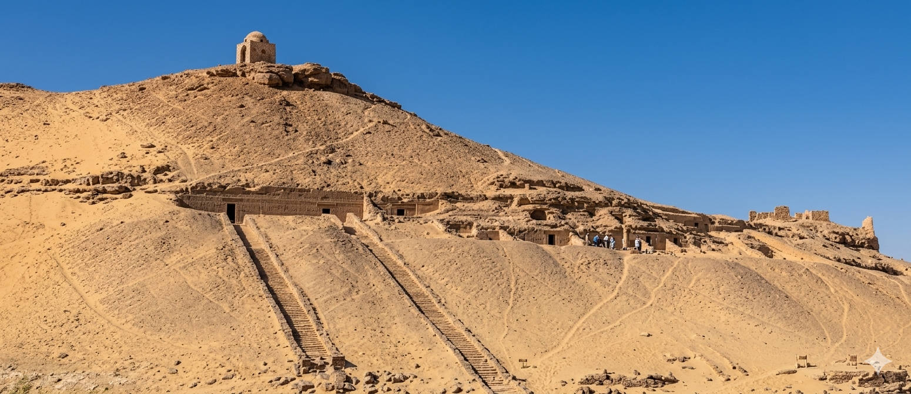

is considered one of the most important cities in southern Egypt and its southern gateway throughout history. It was known as "Son" to the ancient Egyptians, meaning "market." This city was the link between Egypt and Africa, a necessary stop for all trade caravans coming from Nubia via the Nile. Aswan contains many important archaeological sites and historical landmarks, such as Elephantine Island and the remains of ancient granite quarries, including the Unfinished Obelisk. Aswan also has the Nubian Museum and the Monastery of Saint Anba... If you head south by boat, it will take you to the Philae Temples on Agilkia Island. If you travel a short distance north, you will find the temples of Edfu and Kom Ombo. If you change direction, the High Dam is located in Aswan at the far south, and beyond it, you can explore many of the magnificent landmarks of New Kalabsha Island. A journey south of approximately 300 kilometers will take you to the legendary temples of Abu Simbel.

An ancient city considered one of the largest religious centers in ancient Egyptian civilization, Nekhbet was the center of worship for Nekhbet, the vulture goddess of protection in Upper Egypt. When you visit this city, you can see many important monuments dating from the Predynastic Period to the Greco-Roman era, most notably the remains of the Temple of Nekhbet and the remains of the ancient city wall. Don't miss visiting the New Kingdom tombs to see the inscriptions on their walls, which detail the biographies of prominent figures such as Paharie, Ahmose son of Nekhbet, and most famously, Ahmose son of Abana, the ruler of Elkab, one of the most famous warriors against the Makhosians during the New Kingdom, in addition to many scenes of daily life.

Located on the western bank of the Nile River, the Temple of Edfu was built during the Ptolemaic period (305–30 BC). It is dedicated to the god Horus, his wife Hathor, and their son Harsomtus. When visiting the city of Edfu, you can explore one of the most complete ancient Egyptian temples. It still preserves all its architectural and decorative elements, as it remained buried under sand for a long time until the French archaeologist Auguste Mariette cleared it in 1861 and restored some of its parts. Magnificent scenes decorate its walls, including those in the inner and outer hypostyle halls, depicting the temple foundation rituals performed by the king. Make sure not to miss the scenes illustrating the beautiful "Feast of Behdet," during which the statue of the goddess Hathor traveled a long distance from her temple in Dendera to the Temple of Horus in Edfu.

If you are a fan of mountainous nature, you should visit the Gebel El-Silsila area, which includes sandstone quarries extending along both the eastern and western banks of the Nile. From these quarries, sandstone blocks were extracted and used in building many famous temples in ancient Egypt. The quarries still preserve tool marks and workers' graffiti inscriptions to this day. There, you can see many archaeological features carved into the rock, including the beautiful temple of Horemheb, as well as what are known as the Nile stelae of the kings Seti I, Ramses II, Merneptah, and Ramses III, in addition to many tombs and both royal and non-royal monuments.

The name Kom Ombo is derived from the Arabic word "Kom" and the word "Ombo," which originates from the ancient Egyptian word "Nebo," meaning gold. The temple of the city was dedicated to two deities, Sobek and Horus, which gave it a unique architectural style. It features two parallel axial corridors that run through its columned halls, leading to two separate sanctuaries for each of the deities. When visiting this temple, you can see some of its most famous scenes, including the depiction of surgical instruments and the Egyptian calendar carved on the right side of the central hall. Do not miss visiting the Crocodile Museum, which houses a collection of mummified crocodiles, the symbol of the god Sobek, discovered during archaeological excavations.

You can take a Nile Journey to an archaeological island on the banks of the Nile known as Elephantine Island, which once served as a gateway for traders coming from Nubia into Egypt. There, you can explore many different landmarks, including the remains of ancient houses, as well as the Temple of Khnum, the god of the Nile flood, and the Temple of Satet, the goddess of floods and guardian of the southern borders. Do not miss seeing the Nilometer and visiting the museum attached to the island, which displays the results of the German archaeological mission's excavations on Elephantine Island. The island was listed as a UNESCO World Heritage Site in 1979.

This small temple was built during the reign of King Ptolemy III (246–221 BC) and Ptolemy IV (221–204 BC) and was dedicated to the goddess Isis. It is one of the temples that was discovered by chance in 1781 during the construction of the railway in the city of Aswan. It was found in a well-preserved condition, including its roof. You can see two drainage spouts shaped like lion heads on the northern outer wall, used to channel rainwater from the roof. The wall reliefs depict the king performing rituals before a variety of deities. The Temple of Isis was inscribed on the UNESCO World Heritage List in 1979.

When you stroll along the western bank of the Nile in Aswan, at the northern edge of Elephantine Island, you can see a group of rock-cut tombs in the slopes of the hills. These tombs belonged to provincial governors and high-ranking officials, dating from the Old Kingdom to the Middle Kingdom. The necropolis site remained in use until the Roman period. It is known as Qubbet el-Hawa, named after the shrine of Sheikh Ali Abu El-Hawa.
